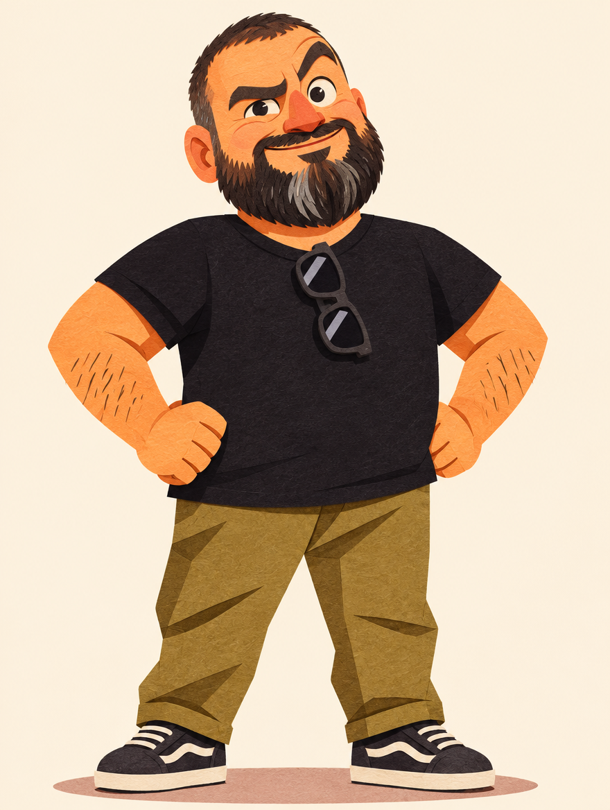
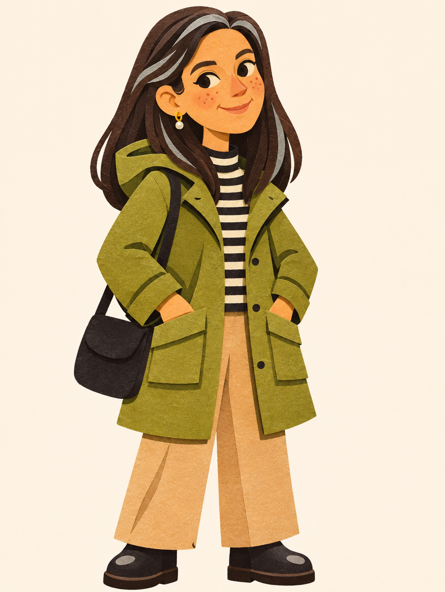
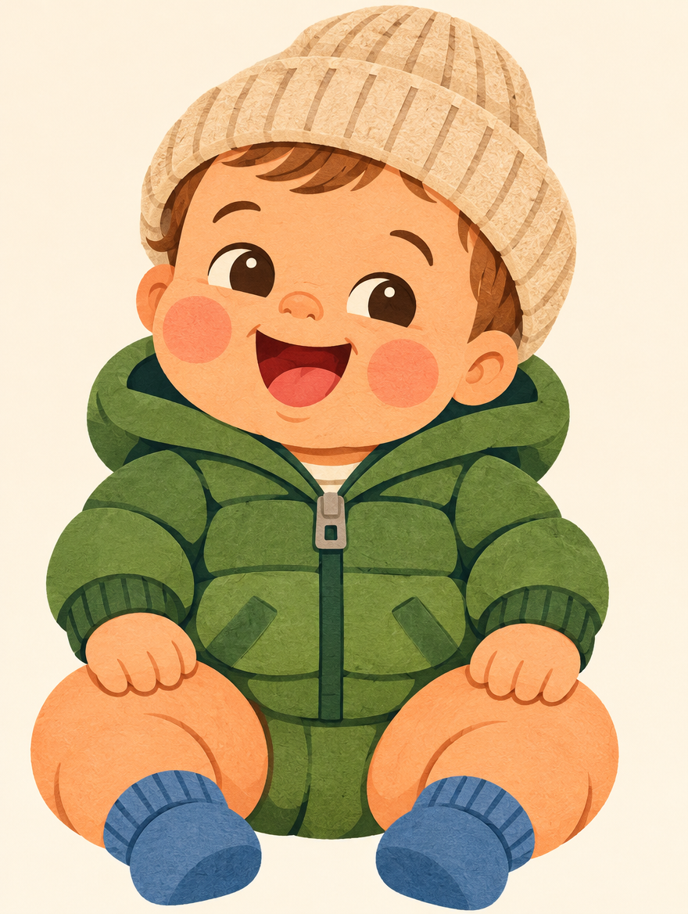

Come generare Papà, Mamma e il Piccolo sempre uguali a se stessi, pagina dopo pagina. Versione 1.0, novembre 2026.
Tre personaggi in stile collage di carta ritagliata. Le immagini qui sotto sono i riferimenti ufficiali: ogni nuova pagina del libro parte da loro.



| Elemento | Regola |
|---|---|
| Tecnica | Collage di carta ritagliata: forme piatte e geometriche, texture di carta visibile, ombre di sovrapposizione leggere e nette. |
| Contorni | Spessi e puliti, mai sfumati. |
| Proporzioni | Testa leggermente più grande del normale, occhi grandi ed espressivi, corpi morbidi e rotondi. Il Piccolo è il più tondo di tutti. |
| Colori | Saturi ma caldi, terrosi. Mai neon, mai grigi freddi. |
| Sfondo | Crema piatto per le mascotte singole. Nelle scene: pochi elementi, stesse texture di carta. |
| Mood | Libro per bambini degli anni '50-'60, caldo, ironico, affettuoso. |
| Mai | Fotorealismo, testo dentro l'immagine, 3D, effetti lucidi. |
Sorriso furbo, sopracciglio alzato, aria di chi la sa lunga.
Papà sul palco, Papà che parla, ritratto frontale con sopracciglio alzato.
Children's picture-book character illustration of the man in the reference photos, full body, standing, goofy proud expression with one raised eyebrow, on a plain pale background. Bold flat cut-paper collage style with simple geometric shapes, chunky outlines, saturated playful colors, mid-century modern kids-book feel. Keep his recognizable traits: short dark hair with receding hairline, full thick dark beard with grey streaks on the chin, strong expressive dark eyebrows, stocky cuddly build, black t-shirt, olive-khaki trousers, dark sneakers, black sunglasses tucked into the collar of his shirt. Mascot look, not photorealistic, no text.
Sorriso dolce e sereno, sguardo gentile.
Mamma al caffè, Mamma con il Piccolo con il cappellino, Mamma con il Piccolo sul tappeto.
Children's picture-book character illustration of the woman in the reference photos, full body, standing, playful gentle smile, on a plain pale background. Bold flat cut-paper collage style with simple geometric shapes, chunky outlines, saturated playful colors, mid-century modern kids-book feel. Keep her recognizable traits: long straight dark brown hair with a few silver-grey streaks near the face, light freckles on her cheeks, small gold hoop earrings with a tiny pearl, tender kind expression, olive-green parka jacket over a black-and-white striped top, beige trousers, small black shoulder bag. Mascot look, not photorealistic, no text.
Risata aperta e curiosa.
Il Piccolo nel passeggino, con il cappellino, sul tappeto.
Children's picture-book character illustration of the baby boy in the reference photos (about 9 months old), full body, sitting happily, cheeky giggle, on a plain pale background. Bold flat cut-paper collage style with simple geometric shapes, chunky outlines, saturated playful colors, mid-century modern kids-book feel. Very rounded chubby shapes, oversized head, big round dark brown eyes, rosy cheeks, soft light-brown fluffy hair, chubby thighs. Wearing a cozy beige knit beanie, a green puffer jacket and little blue socks. Mascot look, not photorealistic, no text.
| Parametro | Valore |
|---|---|
| Modello | gpt_image_2_6 |
| Formato | 3:4 verticale (cambiare solo per doppie pagine: 4:3 o 16:9) |
| Qualità | medium per le bozze, high per la versione finale |
| Risoluzione | 1k per le bozze, 2k per la stampa |
| Riferimenti | Le mascotte approvate di questo manuale, ruolo image_references |
| Personaggio | ID |
|---|---|
| Papà | 9d7e357f-3c1c-457d-9388-6492ccd61fba |
| Mamma | e9db81df-f4de-40bd-85ea-53933b6d3ffd |
| Il Piccolo | 9f04b4ce-6a48-494c-bf01-6d196d0168aa |
Per ogni pagina si allegano solo i riferimenti dei personaggi presenti nella scena.
Children's picture-book page illustration. Characters exactly as in the reference images: [PAPÀ / MAMMA / IL PICCOLO], same faces, same proportions, same outfits unless stated below. Scene: [COSA SUCCEDE, DOVE, ORA DEL GIORNO]. Expressions and poses: [chi fa cosa, con che espressione]. Style: bold flat cut-paper collage with simple geometric shapes, chunky outlines, visible paper texture, saturated warm earthy palette, mid-century modern kids-book feel, plain or minimal background with a few paper-cut elements. Composition: [primo piano / piano medio / campo largo], leave empty space at the [top/bottom] for the caption. Not photorealistic, no text, no lettering.
| Cosa | Come |
|---|---|
| Stagione o luogo | Cambiare vestiti nel prompt, per esempio "Papà in costume al mare", mantenendo tratti fissi e stile. |
| Espressioni | Libere, purché resti riconoscibile il tratto base (sopracciglio di Papà, dolcezza di Mamma, risata del Piccolo). |
| Pose e inquadrature | Libere. Se il personaggio è piccolo nella scena, ripetere comunque i tratti fissi nel prompt. |
| Oggetti ricorrenti | Passeggino verde oliva, occhiali di Papà, borsa nera di Mamma, peluche azzurro del Piccolo. |
Questi punti vanno confermati da Paolo e dalla sua compagna prima di ritenere il manuale definitivo.
Uso privato. Le foto di riferimento non vanno condivise fuori da questo progetto.